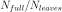

The Quadtree Module¶
The quadtree reduces the amount of displacement information contained in a full resolution displacement scene by adaptively subsampling in areas of complex signal (a visual example can be found here Spool (GUI). The complexity of the signal is defined through the standard deviation within a tile (or QuadNode) of the data. The quadtree parameters define thresholds when a QuadNode is split. The four essential threshold controlling the tree are:
- epsilon/std threshold (
epsilon) - Fraction of NaN values within (
nan_allowed) - Maximum and minium dimension of the tile
(
tile_size_maxandtile_size_min)
Programming example of the quadtree can be found here Quadtree Parametrisation and here Spool (GUI).
-
class
kite.Quadtree(scene, config=<kite.quadtree.QuadtreeConfig object>)[source]¶ Quadtree for irregular subsampling InSAR displacement data held in
kite.scene.SceneInSAR displacement scenes can hold a vast amount of data points, which is often highly redundant and unsuitably large for the use in inverse modeling. By subsampling and therefore decimating the data points systematically through a parametrized quadtree we can reduce the dataset without significant loss of displacement information. Quadtree subsampling keeps a high spatial resolution where displacement gradients are high and efficiently reduces data point density in regions with small displacement variations. The product is a managable dataset size with good representation of the original data.
The standard deviation from
kite.quadtree.QuadNode.displacementis evaluated against different corrections:mean: Mean is substractedmedian: Median is substractedbilinear: A 2D detrend is applied to the nodestd: Pure standard deviation without correction
set through
setCorrection(). If the standard deviation exceedsepsilonthe node is split.Controlling attributes are:
epsilon, RMS thresholdnan_fraction, allowednumpy.nanin nodetile_size_max, maximum node size in metertile_size_min, minimum node size in meter
leaveshold the current tree’sQuadNode‘s. The leaves can also be exported in a CSV format throughexport().-
blacklistLeaves(leaves)[source]¶ Blacklist a leaf and exclude it from the tree
Parameters: leaves (list) – Leaf instances
-
epsilon¶ Threshold for quadtree splitting its
QuadNode.The threshold is the maximum standard deviation of leaf mean, median or simply its values (see ‘’SetSplitMethod’‘) allowed to not further split a “QuadNode”.
Setter: Sets the epsilon/RMS threshold Getter: Returns the current epsilon Type: float
-
epsilon_min¶ Getter: (Cached) Lowest allowed epsilon Type: float
-
export(filename)[source]¶ Exports the current quadtree leaves to
filenamein a CSV formatThe formatting is:
# node_id, focal_point_E, focal_point_N, theta, phi, mean_displacement, median_displacement, absolute_weightParameters: filename (string) – export to path
-
leaf_center_distance¶ Getter: (Cached) Getter: Leaf distance to center point of the quadtree Type: numpy.ndarray, size(N, 3)
-
leaf_coordinates¶ Synonym for
Quadtree.leaf_focal_points()in easting/northing
-
leaf_focal_points¶ Getter: Leaf focal points in local coordinates. Type: numpy.ndarray, size(N, 2)
-
leaf_los_rotation_factors¶ Getter: (Cached) Getter: Trigonometric factors for rotating displacement matrices towards LOS. See kite.BaseScene.los_rotation_factorsType: numpy.ndarray, Nx3
-
leaf_matrix_means¶ Getter: Leaf mean displacements casted to kite.Scene.displacement.Type: numpy.ndarray, size(N, M)
-
leaf_matrix_medians¶ Getter: Leaf median displacements casted to kite.Scene.displacement.Type: numpy.ndarray, size(N, M)
-
leaf_matrix_weights¶ Getter: Leaf weights casted to kite.Scene.displacement.Type: numpy.ndarray, size(N, M)
-
leaf_means¶ Getter: Leaf mean displacements from kite.quadtree.QuadNode.mean.Type: numpy.ndarray, sizeN.
-
leaf_medians¶ Getter: Leaf median displacements from kite.quadtree.QuadNode.median.Type: numpy.ndarray, sizeN.
-
leaf_phis¶ Getter: Median leaf LOS phi angle. kite.Scene.phiType: numpy.ndarray, size(N)
-
leaf_thetas¶ Getter: Median leaf LOS theta angle. kite.Scene.thetaType: numpy.ndarray, size(N)
-
nan_allowed¶ Fraction of allowed
NaNvalues in quadtree leaves. If value is exceeded the leaf is kicked out entirely.Setter: Fraction 0. <= fraction <= 1.Type: float
-
nleaves¶ Getter: Number of leaves for current parametrisation. Type: int
-
nnodes¶ Getter: Number of nodes of the built tree. Type: int
-
nodes¶ Getter: (Cached) All nodes of the tree Getter: Get the list of nodes Type: list
-
plot¶ Getter: (Cached) Simple matplotlib illustration of the quadtree Type: Quadtree.leaf_matrix_means.
-
reduction_efficiency¶ This is measure for the reduction of the scene’s full resolution over the quadtree.
Getter: Quadtree efficiency as  Type: float
-
reduction_rms¶ The RMS error is defined between
leaf_matrix_meansandkite.Scene.displacement.Getter: The reduction RMS error Type: float
-
setConfig(config=None)[source]¶ Sets and updated the config of the instance
Parameters: config ( QuadtreeConfig, optional) – New config instance, defaults to configuration provided by parentScene
-
setCorrection(correction='mean')[source]¶ Set correction method calculating the standard deviation of instances
QuadNodesThe standard deviation from
kite.quadtree.QuadNode.displacementis evaluated against different corrections:mean: Mean is substractedmedian: Median is substractedbilinear: A 2D detrend is applied to the nodestd: Pure standard deviation without correction
Parameters: correction (str) – Choose from methods mean_std, median_std, bilinear_std, stdRaises: AttributeError
-
tile_size_max¶ Maximum allowed tile size in meter. Measured along long edge
(max(dE, dN))Getter: Returns the maximum allowed tile size Setter: Sets the maximum threshold Type: float
-
tile_size_min¶ Minimum allowed tile size in meter. Measured along long edge
(max(dE, dN))Getter: Returns the minimum allowed tile size Setter: Sets the minimum threshold Type: float
The QuadtreeConfig¶
The QuadtreeConfig holds the necessary configuration to reconstruct and save an instance.
-
class
kite.quadtree.QuadtreeConfig(**kwargs)[source]¶ Quadtree configuration object holding essential parameters used to reconstruct a particular tree
-
♦
correction¶ str(pyrocko.guts.StringChoice), default:'median'Node correction for splitting, available methods
['mean', 'median', 'bilinear', 'std']
-
♦
epsilon¶ float, optionalThreshold for node splitting, measure for quadtree nodes’ variance
-
♦
nan_allowed¶ float, default:0.9Allowed NaN fraction per tile
-
♦
tile_size_min¶ float, default:250.0Minimum allowed tile size in meter
-
♦
tile_size_max¶ float, default:25000.0Maximum allowed tile size in meter
-
♦
leaf_blacklist¶ listofpyrocko.guts.Anyobjects, optional, default:[]Blacklist of excluded leaves
-
♦
The QuadNode Class¶
-
class
kite.quadtree.QuadNode(quadtree, llr, llc, length)[source]¶ A node (or tile) in held by
Quadtree. Each node in the tree hold a back reference to the quadtree and scene to accessParameters: - llr (int) – Lower left corner row in
kite.Scene.displacementmatrix. - llc (int) – Lower left corner column in
kite.Scene.displacementmatrix. - length (int) – Length of node in from
llr, llcin both dimensions - id (str) – Unique id of node
- children (List of
QuadNode) – Node’s children
-
corr_bilinear¶ Getter: (Cached) Standard deviation of node’s displacement corrected for bilinear trend (2D) Type: float
-
corr_mean¶ Getter: (Cached) Standard deviation of node’s displacement corrected for mean Type: float
-
corr_median¶ Getter: (Cached) Standard deviation of node’s displacement corrected for median Type: float
-
createTree()[source]¶ Create the tree from a set of basenodes, ignited by
Quadtreeinstance. EvaluatesQuadtreecorrection method andepsilon_min.
-
displacement¶ Getter: (Cached) Displacement array, slice from kite.Scene.displacementType: numpy.ndarray
-
displacement_mask¶ Getter: (Cached) Displacement nan mask of displacementType: numpy.ndarray, dtypenumpy.boolTodo
Faster to slice Scene.displacement_mask?
-
displacement_masked¶ Getter: (Cached) Masked displacement, see displacementType: numpy.ndarray
-
focal_point¶ Getter: (Cached) Node focal point in local coordinates respecting NaN values Type: tuple, float - (easting, northing)
-
gridE¶ Getter: (Cached) Grid holding local east coordinates, see kite.scene.Frame.gridE.Type: numpy.ndarray
-
gridN¶ Getter: (Cached) Grid holding local north coordinates, see kite.scene.Frame.gridN.Type: numpy.ndarray
-
iterLeafs()[source]¶ Iterator over the leaves, evaluating parameters from
Quadtreeinstance.Yields: Leafs fullfilling the tree’s parameters. Type: QuadNode
-
llE¶ Getter: Lower left east coordinate in local coordinates (meter). Type: float
-
llN¶ Getter: Lower left north coordinate in local coordinates (meter). Type: float
-
mean¶ Getter: (Cached) Mean displacement Type: float
-
median¶ Getter: (Cached) Median displacement Type: float
-
nan_fraction¶ Getter: (Cached) Fraction of NaN values within the tile Type: float
-
sizeE¶ Getter: (Cached) Getter: Size in eastern direction in meters. Type: float
-
sizeN¶ Getter: (Cached) Getter: Size in northern direction in meters. Type: float
-
std¶ Getter: (Cached) Standard deviation of displacement Type: float
-
var¶ Getter: (Cached) Variance of displacement Type: float
-
weight¶ Getter: Absolute weight derived from kite.Covariance- works on tree leaves only.Type: float
- llr (int) – Lower left corner row in